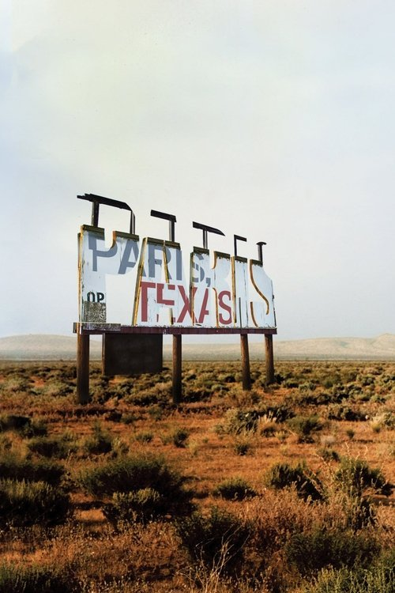

París, Texas (1984)

Plataforma: Max
Puntuación IMDb: 7.9/10
Duración: 2h 30m
Género: Drama psicológico, Neo-western
Sinopsis Rápida
Un hombre reaparece después de cuatro años de desaparición, buscando reconstruir su vida y su relación con su hijo.
Sinopsis Detallada
Travis Henderson, un hombre taciturno y enigmático, emerge de su autoimpuesto exilio en el desierto de Texas. Su viaje es una exploración silenciosa y profundamente conmovedora de la culpa, el perdón y la redención. La película se caracteriza por sus imágenes desoladas pero evocadoras, y la notable interpretación de Harry Dean Stanton. 'París, Texas' es un relato visualmente rico y emocionalmente devastador sobre la fragilidad de la familia y el peso del pasado.
¿Por qué tenés que verla?
- Una obra maestra del cine minimalista que se basa en imágenes y emociones.
- La fotografía impresionante de Robby Müller y la banda sonora conmovedora de Ry Cooder.
- Su influencia en el cine independiente y su estatus como obra maestra del cine americano.
- Una profunda exploración del daño emocional y la posibilidad de sanación.
Idea Extra
Análisis de la fotografía y el simbolismo en 'París, Texas'.